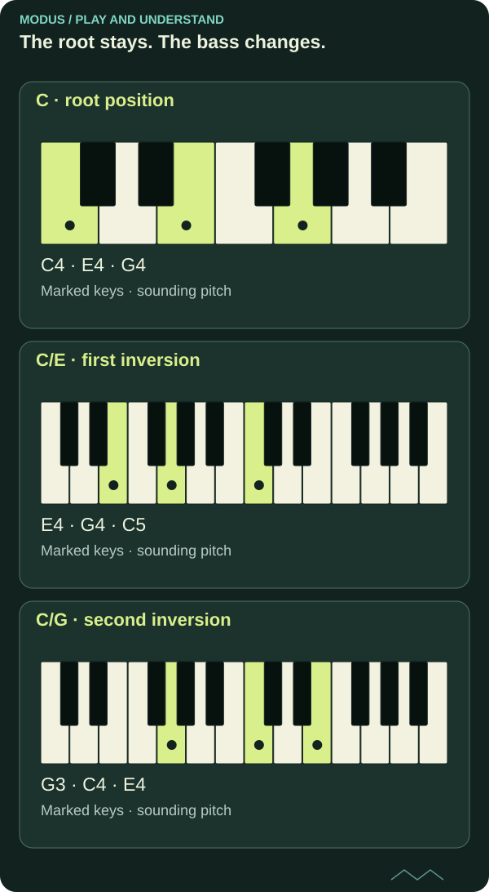

Triads: from the root to the chord’s three notes
Before adding a seventh, understand the triad. Build major, minor, diminished and augmented chords, locate the third and fifth, and play the same notes in different inversions.
WHAT YOU WILL LEARN
Triads: from the root to the chord’s three notes
- Build the four basic triad types from intervals.
- Distinguish root, third and fifth from the lowest note of a shape.
- Understand root position and first and second inversion, including their effect on bass and voice leading.
- Explain how seventh chords extend a triad.
Before you start
You should have read about notes and intervals and tried building chords in C major. Roman numerals help but are not required.

What exactly is a triad?
A triad is a chord class containing three different pitch classes that can be arranged as stacked thirds. In ordinary major/minor harmony, these are the root (1), third (3) and fifth (5). A triad has three distinct chord tones even if the guitar plays six strings or the piano doubles notes in several octaves.
Take C–E–G. C is the root, E the third and G the fifth. C to E is four semitones, a major third; E to G is three, a minor third. C to G is seven, a perfect fifth.
Building triads by taking alternate scale notes helps find chords within a key. Remember that scale degrees determine the note letters selected, while intervals determine the resulting chord quality.

Read the diagram as text
- C · root position: C4 → E4 → G4
- C/E · first inversion: E4 → G4 → C5
- C/G · second inversion: G3 → C4 → E4
Four triad types: what changes?
Keep C as root and change only the third or fifth. This makes each note’s contribution easier to hear.
| Type | Formula | Notes from C | Stacked thirds |
|---|---|---|---|
| Major | 1–3–5 | C–E–G | Major + minor |
| Minor | 1–♭3–5 | C–E♭–G | Minor + major |
| Diminished | 1–♭3–♭5 | C–E♭–G♭ | Minor + minor |
| Augmented | 1–3–♯5 | C–E–G♯ | Major + major |
Major and minor have a perfect fifth and differ in the third. A diminished triad has a minor third and diminished fifth, six semitones above the root. An augmented triad has a major third and augmented fifth, eight semitones above the root.
Find the triads in C major
Use what you know from building chords in a key. Start with C–D–E–F–G–A–B and take alternate notes. This gives seven diatonic triads: three major, three minor and one diminished.
| Degree | Notes | Chord | Numeral |
|---|---|---|---|
| 1 | C–E–G | C | I |
| 2 | D–F–A | Dm | ii |
| 3 | E–G–B | Em | iii |
| 4 | F–A–C | F | IV |
| 5 | G–B–D | G | V |
| 6 | A–C–E | Am | vi |
| 7 | B–D–F | Bdim | vii° |
Not every chord in the key of C major is a C-major chord. They share a key, but the intervals within each triad differ. Moving the system to G major keeps I–ii–iii–IV–V–vi–vii°, while the chord names change.
Root position and inversions: same chord, new bass
The notes of C major are C, E and G. C–E–G with C lowest is root position. With E lowest, arrange them as E–G–C: first inversion, commonly C/E. With G lowest, G–C–E is second inversion, commonly C/G.
The chord’s root remains C in all three. The root is not necessarily the lowest note. Inversions can make bass lines smoother and shorten voice movements without changing chord identity.
In Roman-numeral analysis, I6 usually means first inversion and I6/4 second inversion. This does not automatically mean a C6 chord with added A. The 6/4 figures refer to intervals above the bass in figured-bass practice.
Move one note and hear the change
Spend time on this exercise. Play C–E–G slowly. Keep C and G while lowering E to E♭: C major → C minor. Keep C and E♭ and lower G to G♭ for Cdim. Return to C major and raise G to G♯ for Caug.
On piano, hold two notes and move the third. On guitar, first play individual notes on one or more strings, then find a shape containing the same three pitch classes. The finger pattern is not the explanation; you are investigating the intervals.
Describe what you actually hear. Major is not always happy, nor minor always sad. Timbre, register, tempo and context affect the result. Aim to recognise which note changed rather than memorising a fixed emotional description.
From triads to seventh chords
Once you understand triads, add one more chord tone by continuing the stack of thirds. Add B to C–E–G for Cmaj7: C–E–G–B. B is a major seventh above C.
Add B♭ instead for C7: C–E–G–B♭, a dominant-seventh chord type. C7 need not be the actual dominant of the key; the name primarily describes its construction.
Add B♭ to C–E♭–G for Cm7: C–E♭–G–B♭. Root, third and fifth remain the foundation. That is why we learn triads first.
The method: hear, predict, play, explain, change
Hear: Play C major, C minor and Cdim as arpeggios. Predict: Sing the note that must move to turn C major into minor. Play: Check on the instrument and try all three inversions of C major. Explain: Identify root, third, fifth and bass in C/E. Change: Write a progression using an inversion to give the bass stepwise motion.
For example: C → G/B → Am. The bass becomes C–B–A. G/B contains G–B–D with B in the bass. You have used an inversion to create musical movement, rather than merely learning a shape.
Move from knowing which notes form a chord to understanding how those notes can approach the next chord. That makes maj7, m7 and dominant-seventh chords easier to learn.
FROM READING TO PLAYING
Try it yourself.
Play C–E–G. Locate the third and lower E to E♭ without changing the other notes. Play C/E and C/G and name the bass of each. Add B to C–E–G and explain why the result is Cmaj7.
- Build C, Cm, Cdim and Caug from the same root. Sing the third and fifth before playing.
- Play C, C/E and C/G. Write the bass note and identify each inversion.
- Play C–G/B–Am and hear C–B–A in the bass. Then add B to the C-major triad and compare C with Cmaj7.
CHECK YOUR UNDERSTANDING
What do you remember?
Three questions about what you have read. Get all three right to complete the quiz. Try as many times as you like.
Completion is saved in this browser and shared between Norwegian and English.
You answered all three questions correctly. Take the idea to your instrument.
Back to the article library ↗︎RELATED READING
Seventh chords: more colour, the same foundation
Once you can hear and build triads, the seventh is the next note that extends the harmony.
Seventh chords: more colour, the same foundation ↗︎